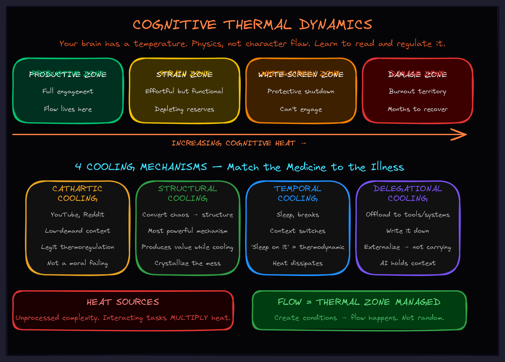

May 2026Level 6 · ConcentrationThe operator
Cognitive Thermal Dynamics
Your brain has a temperature. Learn to read it before it shuts you down.

The Real Reason You Tab to YouTube
You're deep in a complex problem. Strategy doc, product roadmap, architecture decision — something with a lot of moving parts. You can feel your focus slipping. Your eyes glaze. You open a new tab. YouTube. Reddit. Anything.
You call it procrastination. You call it a lack of discipline. You beat yourself up about it.
You're wrong about what's happening.
What's actually happening is thermal regulation. Your brain is overheating, and it's pulling you toward low-demand content the same way your body pulls you toward shade on a hot day. It's not a character flaw. It's physics.
Every unprocessed piece of complexity adds heat. When heat exceeds capacity, your nervous system shuts down engagement to prevent damage. That's not laziness. That's engineering.
The Discovery
I was building an agent architecture — dozens of interacting components, undefined failure modes, competing design choices all held in my head simultaneously. I could feel something building. Not a thought. A pressure.
My attention kept sliding off the problem. I'd open the repo, stare at it, feel my brain refuse to engage, tab to YouTube, hate myself for it. Classic "I can't focus" story.
Then I noticed something. The YouTube content I was reaching for wasn't random. Ski down Everest. Fly in a U2 spy plane. Wingsuit through a canyon. My mind was seeking extreme coordination problems — systems where a pilot navigates a vehicle through a hostile environment with tight feedback loops.
It was reaching for analogies to my problem while simultaneously cooling down.
Cooling and processing were happening at the same time. The reach wasn't weakness. It was my subconscious doing two jobs at once.
The Framework: Cognitive Thermodynamics
Once you see it as thermodynamics, the whole picture clicks into place. Four components:
1. Heat Sources
Anything that requires processing but hasn't been processed yet generates cognitive heat. Undefined problems. Competing demands. Items held in mind that interact with each other. The key word is unprocessed — resolved complexity doesn't generate heat. Only open loops do.
2. Heat Accumulation
This is where people underestimate the dynamics. Heat doesn't just add — it multiplies. Five independent tasks add linearly. Five interacting tasks multiply. Every unresolved item radiates heat continuously until it's processed or released. You're not carrying a stack. You're carrying a reactor.
3. Thermal Zones
Your brain has distinct operating zones, and the transitions between them are sharp:
- Productive zone. Heat is below capacity. Full engagement. This is where you want to live.
- Strain zone. Heat at capacity. Effortful but functional. You can push through, but you're depleting reserves.
- White-screen zone. Heat exceeds capacity. Protective shutdown engages. Your mind goes blank, attention slides off the problem, engagement becomes impossible. This is not failure — it's your nervous system preventing damage.
- Damage zone. Sustained excessive heat. Burnout. Months of recovery, not hours.
4. Cooling Mechanisms
Four distinct cooling mechanisms exist. Most people only use one:
- Cathartic cooling. Engagement with low-demand content. The YouTube tab. Social media scrolling. Legitimate thermoregulation — not a moral failing.
- Structural cooling. Converting chaos into structure. When you take an undefined mess and organize it into a framework, you're turning high-entropy heat into low-entropy order. This is the most powerful cooling mechanism because it produces value while cooling.
- Temporal cooling. Sleep. Breaks. Context switches. The reason "sleep on it" works is thermodynamic — you're giving accumulated heat time to dissipate.
- Delegational cooling. Offloading to tools, systems, or other people. Writing things down. Using AI to hold context. Every item you externalize is heat you're no longer carrying.
Why This Changes Everything About Productivity
Most productivity advice treats the symptoms. "Just focus harder." "Use the Pomodoro technique." "Block distracting sites." This is like telling someone with a fever to stop sweating. The sweating isn't the problem. The temperature is the problem.
Once you see the thermodynamics, you stop managing symptoms and start managing temperature:
Before a big work block: What's my current heat level? What heat will this generate? Do I have enough cooling capacity? If incoming heat plus current heat exceeds capacity, I need to adjust before starting — not after I'm already white-screening.
During work: Am I in the productive zone? Physical signals tell you before conscious awareness does — tension in shoulders, shallow breathing, eyes glazing, tab-switching increasing. These aren't failures to correct. They're gauges to read.
When you white-screen: Don't fight it. The shutdown is protective. Choose your cooling mechanism deliberately. If the heat is from chaos — use structural cooling, impose any structure on the mess. If the heat is from exhaustion — use temporal cooling, actually rest. If the heat is from overload — use delegational cooling, externalize everything you're holding.
Match the medicine to the illness. Cathartic cooling won't solve chaos. Structural cooling won't solve exhaustion. The wrong cooling mechanism wastes time without reducing the right kind of heat.
The Connection to Flow
Flow — that state where hours pass like minutes and work feels effortless — isn't random. Flow is what happens when your thermal dynamics are managed correctly.
Think about it: flow requires five conditions. A compressed foundation (no unprocessed weight below you). Appropriate challenge (at your edge, not beyond it). Clear constraints (no energy wasted on "should I be doing this?"). Minimal interference (nothing pulling your attention). Immediate feedback (you know quickly if you're on track).
Every single one of those conditions is a thermal management strategy. Compressed foundation = processed heat from prior work. Appropriate challenge = heat generation matched to cooling capacity. Clear constraints = no meta-processing heat. Minimal interference = no external heat sources. Immediate feedback = no uncertainty heat building up.
Flow is the productive thermal zone, structurally maintained. You don't "enter flow." You create the thermal conditions and flow happens.
The Compression Multiplier
All of this compounds over time through compression.
When you fully process a piece of complexity — really understand it, not just survive it — it compresses. What was once a sprawling, attention-demanding structure becomes a compact chunk you can hold without effort. You don't think about it anymore. You think with it.
Every framework, every mental model, every skill you truly internalize is compressed complexity that no longer generates heat. This is why experienced executives can handle situations that would overwhelm junior staff. They're not smarter. They have more compressed structures. Their thermal capacity is effectively larger because less of it is occupied by unprocessed weight.
The implication: every hour you invest in structural cooling — converting chaos to framework — permanently reduces your thermal load. Cathartic cooling buys you an afternoon. Structural cooling buys you a career.
The Monday Morning Protocol
Before starting significant work, run this 30-second thermal assessment:
- Current heat level? Did I wake up rested (low) or with unfinished problems already running (high)?
- Heat capacity today? Well-rested with a clear calendar (high) or tired with back-to-back meetings (low)?
- Incoming heat? What complexity am I about to engage? How many interacting pieces?
- Cooling plan? What mechanisms will I use? When? Am I planning for sustainable operation or boom-bust?
If current heat plus incoming heat exceeds capacity, adjust before starting. Reduce incoming heat (postpone, delegate, scope down). Increase cooling (schedule breaks, prepare structural tools, externalize held items). You cannot think your way out of thermal limits. You can only manage within them.
What This Means for Your Business
This isn't just personal productivity theory. Every team has thermal dynamics. Every organization has heat sources, accumulation patterns, and cooling mechanisms — or the lack of them.
When your team hits a wall on a complex project, the usual response is "push harder" or "hire more people." But what if the real issue is thermal? Unprocessed complexity multiplying across interacting workstreams. No structural cooling — no frameworks for making the chaos legible. No delegational cooling — no systems to externalize what everyone is holding in their heads.
AI agents, when deployed correctly, are delegational cooling technology. They hold the context so your people don't have to. They process the repetitive complexity so your team's thermal capacity is freed for the work that actually requires human judgment.
But only if you deploy them with thermal awareness. Automating the most complex workflow first is like putting a space heater next to the thermostat. You'll generate more heat than you dissipate.
Start with the workflows that generate the most unnecessary heat — the repetitive, clearly-bounded processes that eat thermal capacity without producing insight. Free that capacity first. Then use it for the hard problems.